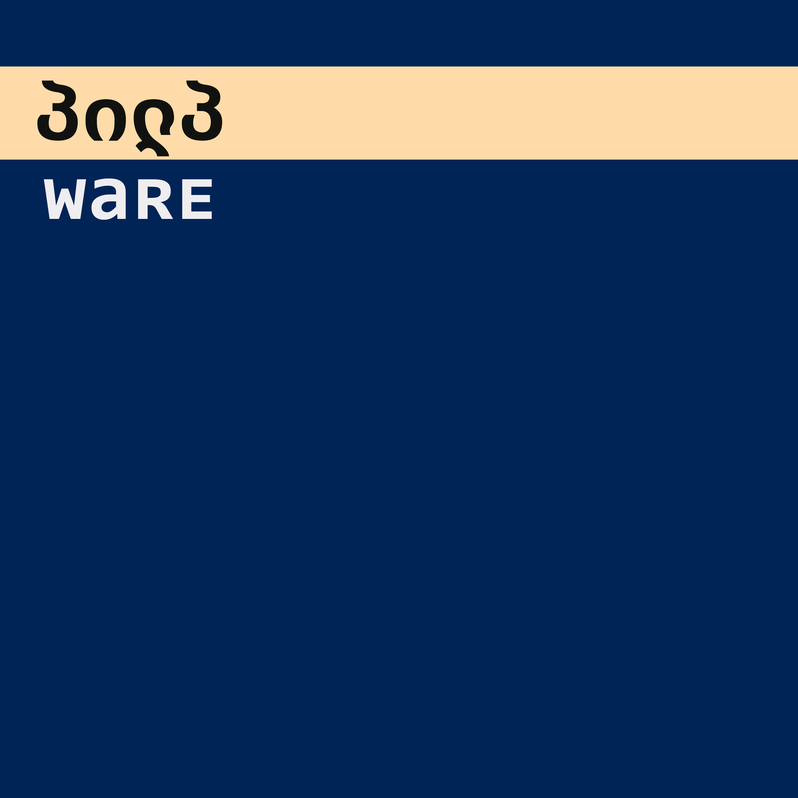

Discography
Katastrofální selhání (2025)

Influenced by industrial and metal. Katastrofální selhání combines saw wave riffs, sampling, minimal composition, and harsh vocals.
- Contains samples from: Ring: The Legend of the Nibelungen (1998), Mézga Aladár különös kalandjai (1972, cz dub), Dune (1984, cz dub), Tomb Raider: Anniversary (2007), Seksmisja (1984, cz dub), Spider-Man (2002, cz dub), Half-Life: Opposing Force (1999), Nu, pogodi! (1969, orig. & cz dub)
- Number of tracks: 8
- Running time: 22:49
Full version is available on
MP3,
Bandcamp,
YouTube. The seven-track version (with the first track, "Uvedení", missing) is available on
Spotify
and other major streaming platforms.